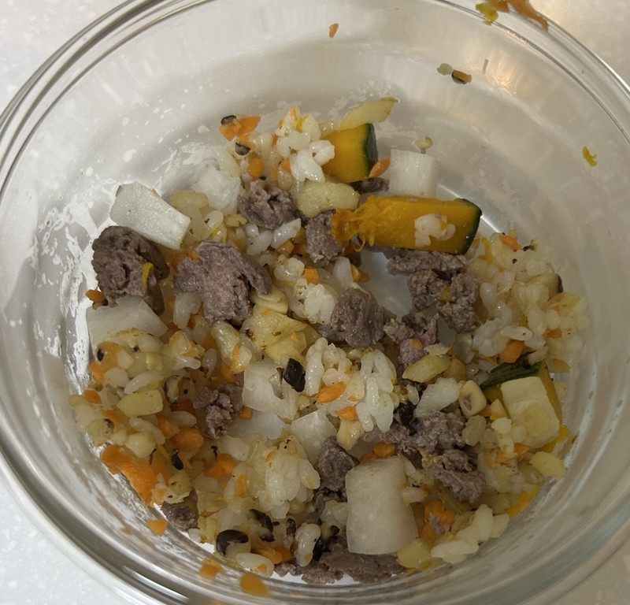
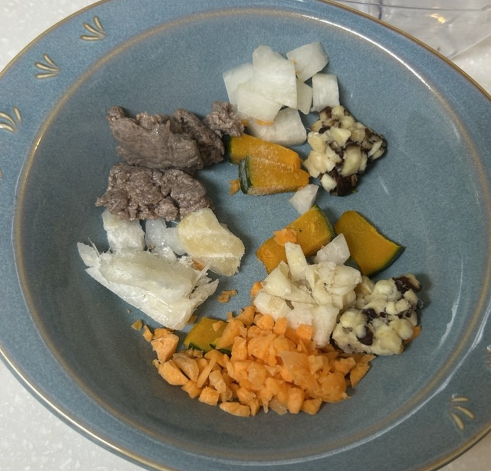
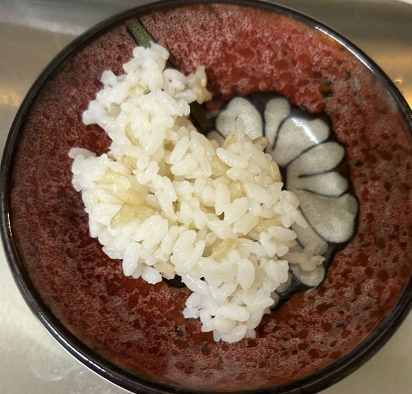
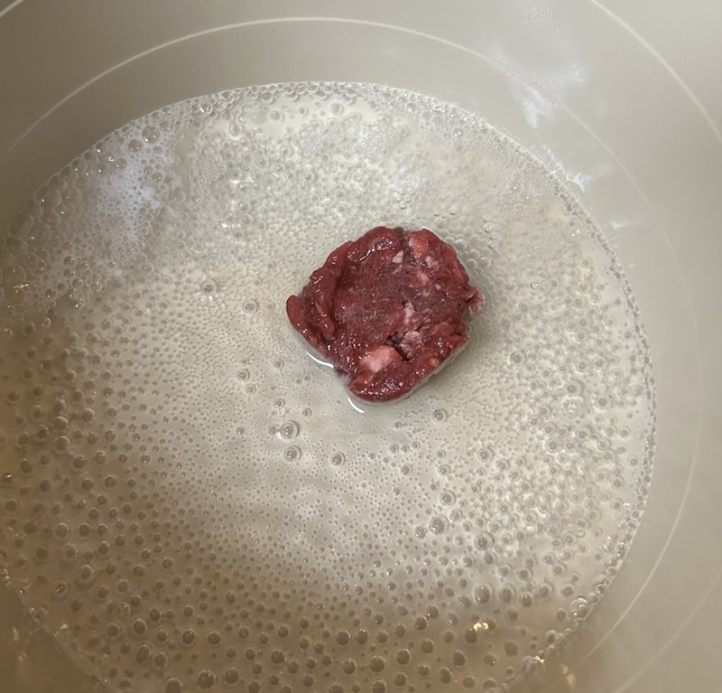
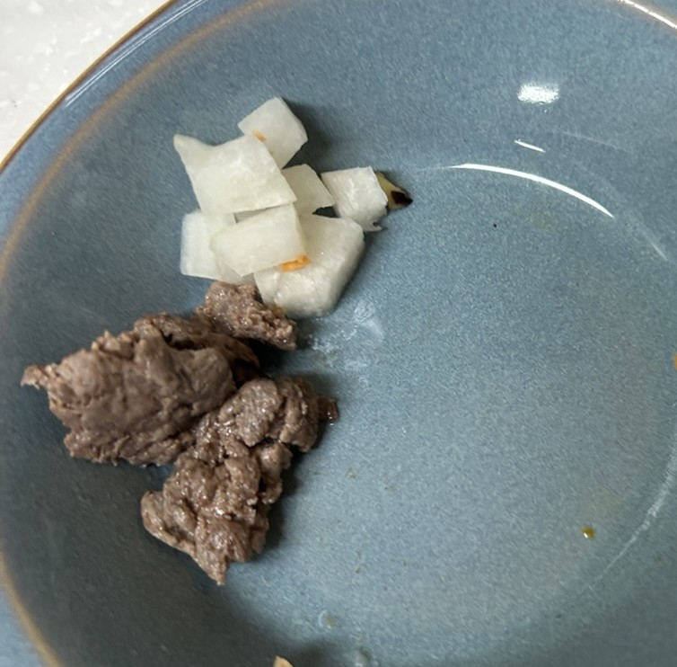
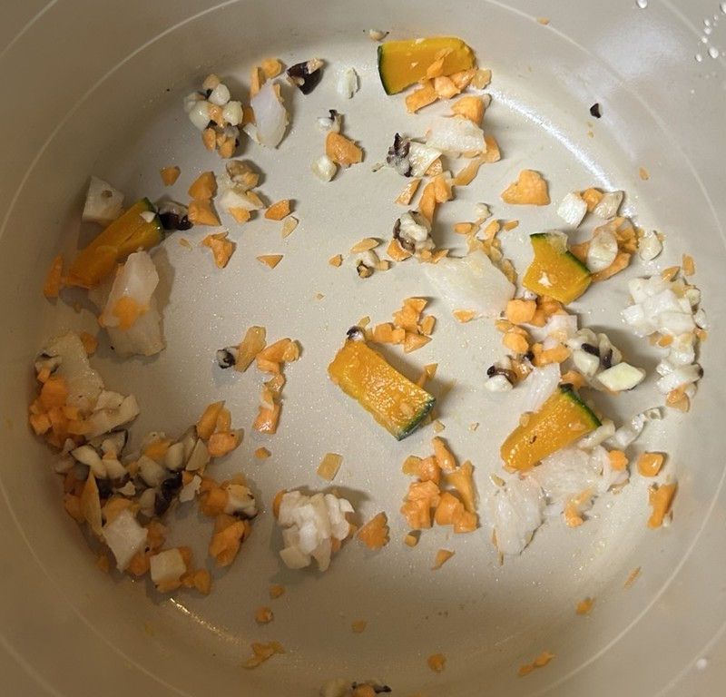
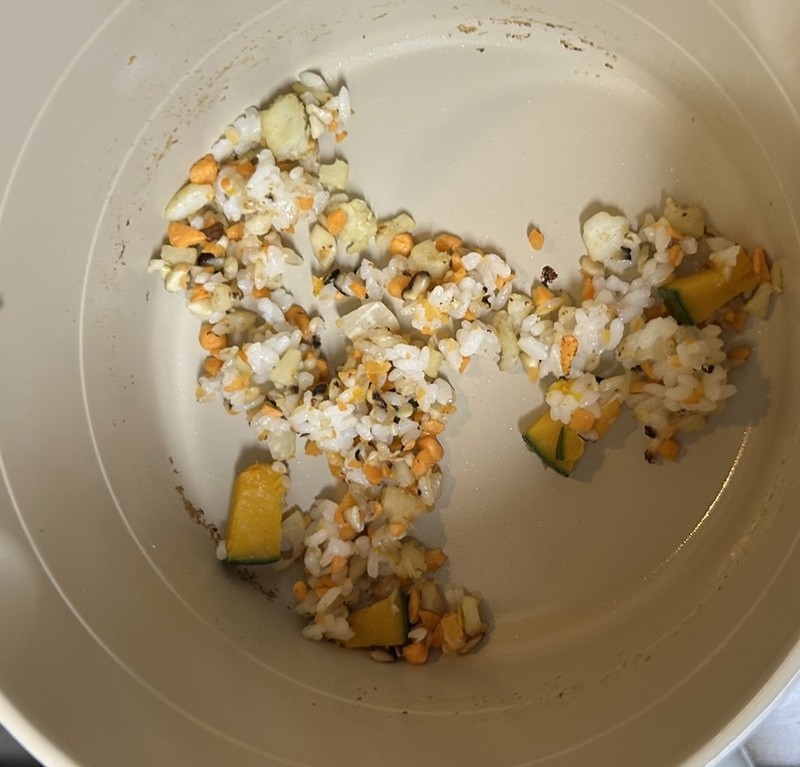

About me
Recommended ingredients
Recommended recipes
Recommended related books

볶음밥 레시피
음수량을 위한 화식을 처음 시작하는 강아지를 위한
볶음밥 레시피
1. 재료손질

채소들은 미리 자르고 소분해서 얼려두거나 직접 손질해서 강아지가 소화할 수 있도록 강아지 특성에 따라 잘라준다
(저희집 강아지는 당근과 버섯을 잘 소화시키지 못해서 아주 잘게 썰어줍니다.)

현미밥

고기는 미리 삶아서 준비해줍니다.

무는 익혀서 먹어도 되지만, 무는 소화효소가 풍부해서 익히지 않고 주는 것도 소화에 도움이 됩니다.
Previous
Next
2. 조리 과정 / 완성

채소는 올리브유 한스푼에 연근과 단호박이 익을 때까지 약 3~4분 정도
볶아줍니다.
야채를 볶으면 영양소 흡수률이 높아집니다.

현미밥을 넣고 같이 볶아줍니다. 그리고 그릇에 덜어 식혀줍니다.
삶아둔 고기와 아까 한입크기로 썰은 무를 식힌 야채 볶음밥과 섞어줍니다.
유산균과 오메가 3를 섞어 완성합니다!
Previous
Next